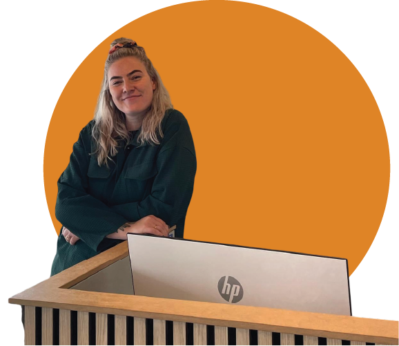

Velkommen til
MIT PORTFOLIO
Formålet med denne side er at præsentere udvalgte projekter, der viser mine kompetencer inden for digital design, brugeroplevelse, webudvikling og visuel kommunikation. Portfolioen indeholder eksempler fra både individuelle og gruppebaserede opgaver på 1. semester, hvor jeg har arbejdet med idéudvikling, prototyper, frontend-programmering og designprincipper.
Hvert projekt er dokumenteret med fokus på processen - fra idégenerering og research til det færdige produkt - samt de overvejelser, jeg har gjort mig undervejs.
